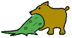

Vahunz is a CLI-based replace command that can supersede many words across several source files with only one invocation.
Normally the target words will be created randomly, turning meaningful names into unreadable garbage. For example, a function name like read_input_file() could be replaced by g7B() or something as useless. Additionally, comments and indention can be removed. Text inside string constants and comments will not be modified. 
As an option, you can specify specific substitutes, so Vahunz can also be applied in a non-destructive manner. This can be used to replace inconsistent, too short or unlegible names by something more meaningful. Among programmers, this process is known as "The Great Renaming".
Vahunz is freeware, which basically means you do not have to pay for using it, and you also can redistribute it under certain conditions.
This manual provides an overview describing what you can use this program for. A little tutorial explains step-by-step how to actually perform these actions.
Later on a few use-cases will outline some more complex tasks, like giving your program to untrusted persons or doing The Great Renaming.
There is also a reference section for the experienced user.
And of course you will find the usual notes concerning copyright, installation and support.